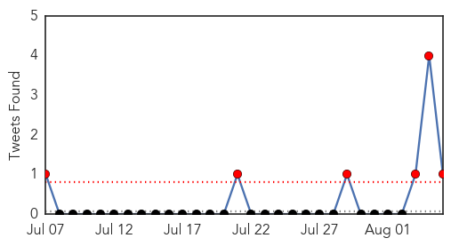
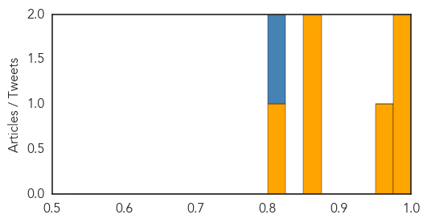
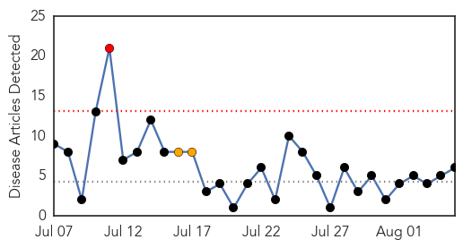
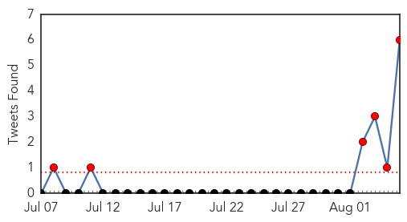
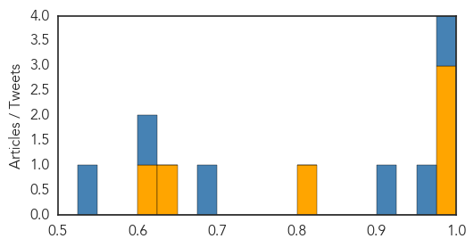

Cholera
30-Day Web Trend
5 alerts, 1 warnings

30-Day Twitter Trend
10 alerts, 0 warnings

Article Locations

Article Confidences
Top Articles:
- 0.996
- Ghana, Business Advice, Jobs, News, Business Directory, Real Estate, Finance, Forms, Auto
- 0.994
- Ghana's Minister overwhelmed by cholera outbreak
- 0.960
- South Sudan Health Cluster Bulletin #28, 03 August 2014 - South Sudan
- 0.868
- Cholera outbreak in Borno: Over 1,000 persons treated, death toll hits 27
- 0.862
- Humanitarian funding analysis: Cholera outbreak, Cameroon - Cameroon
- 0.825
- UPDATE: 'Flesh-eating' bacteria kills 1 in Sarasota County
Top Tweets:
- 0.907
- RT: “@edwinaddae: Malaria,Hiv/Aids,Cholera and the impending ebola virus.The world is not safe no more.”God Save Us All
- 0.629
- New stopcholera blog: Guinea experience shows cholera vaccine campaigns are feasible even during an outbreak: http://t.co/PYRj2HjLAk
Dengue Fever
30-Day Web Trend
1 alerts, 2 warnings

30-Day Twitter Trend
6 alerts, 0 warnings

Article Locations
Article Confidences
Top Articles:
- 0.995
- Dengue rages, but BBMP does an ostrich
- 0.995
- Florida reports more travel associated dengue, chikungunya cases
- 0.988
- Campaign to curb dengue ‘ineffective’
- 0.802
- Senior citizens should be more vigilant
- 0.639
- Costa Ricans design app to report dengue breeding sites
- 0.622
- Call for intensifying anti-dengue drive
Top Tweets:
- 0.996
- RT: Kikungunya, Ebola, Dengue, Malaria, Influenza, no me preocupan tanto como la urgencia de Saludcoop
- 0.967
- RT: Modifican genéticamente mosquitos, donde estos no pueden incubar los virus de la malaria o el dengue en Brasil.
- 0.901
- RT: @anamariasilva17 seria mejor que buscaran cura para el ebola la malaria el dengue y tanta peste que existe
- 0.679
- RT: Las picaduras de mosquitos, moscas, garrapatas, chinches o arañas pueden transmitir enfermedades como el dengue, la malaria …
- 0.625
- RT: Torreon El virus del ébola, aunque letal, ha dejado menos muertos que el dengue y la malaria http://t.co/T9GWQ4NCyX
- 0.625
- RT: El virus del ébola, aunque letal, ha dejado menos muertos que el dengue y la malaria http://t.co/tVDxCxnpnA
- 0.625
- RT: El virus del ébola, aunque letal, ha dejado menos muertos que el dengue y la malaria - http://t.co/DhFq49xoiK // Que opt…
- 0.603
- RT: TipsDeSalud Noticias recientes sobre las vacunas de dengue, malaria, polio y VPH: Vacuna contra el dengue... http://t…
- 0.550
- RT: El virus del ébola, aunque letal, ha dejado menos muertos que el dengue y la malaria - http://t.co/9epfB9O58T http:…
- 0.544
- RT: @VEJA não dá conta de dengue, diarréia ou malária e vai se meter com ébola. Muito bem, seja o que Deus quiser.